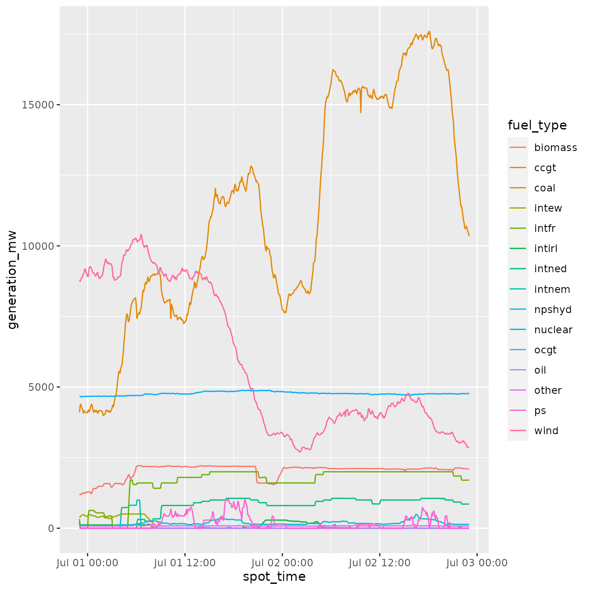

using_BMRSr.RmdThe BMRSr package provides a number of wrapper functions to make the Balancing Mechanism Reporting Service (BMRS) API provided by ELEXON easier to use. There’s a massive repository of very useful and interesting data held in BMRS, but the API itself is not particular intuitive, and can result in the user needing to repeat lots of steps in order to retrieve and the clean the data. This package is an effort to automate those boring steps, making it easier for the user to retrieve the data for their analysis.
The first step in using the BMRS API is to read the documentation currently available: Balancing Mechanism Reporting System API. This document tells you all of the available data items and what you can expect to get back. I’ve tried to include a couple of helper functions to list all data items, find what parameters you need for specific data items, but there’s a lot so this document will always be more detailed.
Second, to actually access the BMRS API, you’ll need an API key. These are freely available by signing up through the ELEXON Portal: ELEXON portal.
Querying the BMRS API can be broken down into 4 parts:
So, all together, we need to generate and send a request, get a response back and then parse it.
To do all of these steps in one go and just get back the parsed response, use the full_request() function. We’ll go into a bit more detail about what exactly this function does, but it will essentially just builds the request, send it, clean the received data and then return it.
To use the full_request() function, you’ll need to provide a few things:
...
build_call() function (discussed below), which builds the url for the data we want. Look at the Building requests part of the vignette for what parameters to include here.get_params
httr::GET() call.parse
TRUE
clean_dates
full_request() function will try and auto-convert those columns to their appropriate type. If it fails, you will still get a response, but there will also be a warning telling you that it didn’t work.Building your API request is done through the build_call() function. Because there are three different types of data items held in BMRS, the build_call actually calls one of the three different functions to produce the API request needed for your data item. On the surface of it however, build_call will handle all of that for you.
The build_call() function has a few required arguments:
data_item
get_data_items()
api_key
...
get_parameters(your_data_item). This will return a vector of the parameters your data item accepts.Aside from the required arguments, build_call() has some further optional arguments:
api_version
service_type
The sending of the API requests is done via the send_request() function.This function is essentially a wrapper to the httr::GET() function with a couple of changes to the parameters. The arguments for send_request() are:
request
build_call() function), you can pass this to as the request parameter (as long as it’s in a named list).build_call() function returns a named list (with one of the values being a url), so the result from a build_call() can be passed directly to send_request().config_options
httr::GET() function that actually sends the request.The send_request() function will then return a response() object, with an added $data_item attribute. This data item value will be the data item that was specified in the request list (if one was specified).
Parsing the response object returned from the send_request() function is handled by the parse_response() function. This will take the response object, extract the returned data and then do some cleaning.
The parameters for parse_response() are:
response
send_request() function).format
clean_dates
Depending on what format you specified, this function will either return a tibble (csv) or a list (xml). And there you have it, your complete API request and response!
In addition to the basic workflow of build, send, parse/clean, the package also provides some utility functions:
get_data_items()
full_request() and build_call() functions.) This function just returns a list of the data item IDs, it doesn’t tell you what is returned for each one.get_parameters()
get_function()
build_x_call() functions will be called for that data item.get_data_item_type()
build_x_call() function to use but build_call() will work it out for you anyway so it’s suggested you use that.check_data_item()
get_column_names()
clean_date_columns()
Now we understand the workflow associated with an API request, let’s do an example.
We’ll do it twice, once just using the full_request() function, and then again using the functions provided for each step to ensure we know what’s going on under the hood.
In this example, we’ll get some generation data by fuel type between the dates of 1 July 2019 and 3 July 2019 and then plot it using ggplot2. The dataset used is available in the package as generation_dataset_example.
full_request() approachFirst things first, let’s create a variable to hold our API key…
api_key <- "your_api_key_here"Next, we’ve inspected the BMRS API documentation and found that we want the “FUELINST” data item. Let’s find out what parameters we need to provide for this data item…
get_parameters("FUELINST")
#> [1] "from_datetime" "to_datetime"So we’ve got to provide from_datetime and to_datetime. Now let’s create our request…
generation_data <- full_request(data_item = "FUELINST",
api_key = api_key,
from_datetime = "01 07 2019 00:00:00",
to_datetime = "03 07 2019 00:00:00",
parse = TRUE,
clean_dates = TRUE)Again, let’s create a variable to hold our API key and find out what parameters we need for our “FUELINST” data item…
api_key <- "your_api_key_here"
get_parameters("FUELINST")Next, let’s build our call…
generation_data_request <- build_call(data_item = "FUELINST",
api_key = api_key,
from_datetime = "01 07 2019 00:00:00",
to_datetime = "03 07 2019 00:00:00",
service_type = "csv")This is equivalent but shorter than…
get_data_item_type("FUELINST")
#This tells us which build_x_call() function to use
generation_data_request <- build_legacy_call(data_item = "FUELINST",
api_key = api_key,
from_datetime = "01 07 2019 00:00:00",
to_datetime = "03 07 2019 00:00:00",
service_type = "csv")Now we’ve got our request, we can send it…
generation_data_response <- send_request(request = generation_data_request)And then parse it…
generation_data <- parse_response(response = generation_data_response,
format = "csv",
clean_dates = TRUE)Linking all these together using the pipe, we’d get…
generation_data <- build_call(data_item = "FUELINST",
api_key = api_key,
from_datetime = "01 07 2019 00:00:00",
to_datetime = "03 07 2019 00:00:00",
service_type = "csv") %>%
send_request() %>%
parse_response()Now we’ve got the data, we can convert the dataset to the tidy format and then make a plot…
#Load the libraries for a bit more cleaning and then plotting...
library(ggplot2, quietly = TRUE, warn.conflicts = FALSE)
library(tidyr, quietly = TRUE, warn.conflicts = FALSE)
library(dplyr, quietly = TRUE, warn.conflicts = FALSE)
#Change the fuel types from columns to a grouping (tidy format)
generation_data <- generation_data %>%
dplyr::mutate(settlement_period = as.factor(settlement_period)) %>%
tidyr::gather(key = "fuel_type", value = "generation_mw", ccgt:intnem)
#Make a line graph of the different generation types
ggplot2::ggplot(data = generation_data, aes(x = spot_time, y = generation_mw, colour = fuel_type)) +
ggplot2::geom_line()